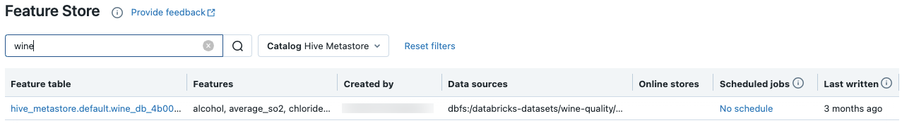
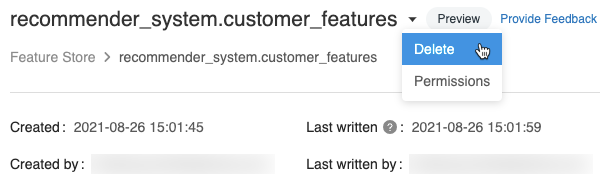
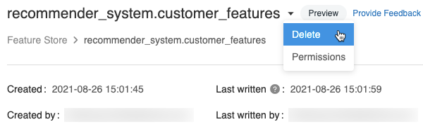

Work with features in Workspace Feature Store
This page describes how to create and work with feature tables in the Workspace Feature Store.
Note
If your workspace is enabled for Unity Catalog, any table managed by Unity Catalog that has a primary key is automatically a feature table that you can use for model training and inference. All Unity Catalog capabilities, such as security, lineage, tagging, and cross-workspace access, are automatically available to the feature table. For information about working with feature tables in a Unity Catalog-enabled workspace, see Feature Engineering in Unity Catalog.
For information about tracking feature lineage and freshness, see Discover features and track feature lineage.
Note
Database and feature table names can contain only alphanumeric characters and underscores (_).
Create a database for feature tables
Before creating any feature tables, you must create a database to store them.
%sql CREATE DATABASE IF NOT EXISTS <database-name>
Feature tables are stored as Delta tables. When you create a feature table with create_table (Feature Store client v0.3.6 and above) or create_feature_table (v0.3.5 and below), you must specify the database name. For example, this argument creates a Delta table named customer_features in the database recommender_system.
name='recommender_system.customer_features'
When you publish a feature table to an online store, the default table and database name are the ones specified when you created the table; you can specify different names using the publish_table method.
The Databricks Feature Store UI shows the name of the table and database in the online store, along with other metadata.
Create a feature table in Databricks Feature Store
Note
You can also register an existing Delta table as a feature table. See Register an existing Delta table as a feature table.
The basic steps to creating a feature table are:
Write the Python functions to compute the features. The output of each function should be an Apache Spark DataFrame with a unique primary key. The primary key can consist of one or more columns.
Create a feature table by instantiating a
FeatureStoreClientand usingcreate_table(v0.3.6 and above) orcreate_feature_table(v0.3.5 and below).Populate the feature table using
write_table.
For details about the commands and parameters used in the following examples, see the Feature Store Python API reference.
from databricks.feature_store import feature_table
def compute_customer_features(data):
''' Feature computation code returns a DataFrame with 'customer_id' as primary key'''
pass
# create feature table keyed by customer_id
# take schema from DataFrame output by compute_customer_features
from databricks.feature_store import FeatureStoreClient
customer_features_df = compute_customer_features(df)
fs = FeatureStoreClient()
customer_feature_table = fs.create_table(
name='recommender_system.customer_features',
primary_keys='customer_id',
schema=customer_features_df.schema,
description='Customer features'
)
# An alternative is to use `create_table` and specify the `df` argument.
# This code automatically saves the features to the underlying Delta table.
# customer_feature_table = fs.create_table(
# ...
# df=customer_features_df,
# ...
# )
# To use a composite key, pass all keys in the create_table call
# customer_feature_table = fs.create_table(
# ...
# primary_keys=['customer_id', 'date'],
# ...
# )
# Use write_table to write data to the feature table
# Overwrite mode does a full refresh of the feature table
fs.write_table(
name='recommender_system.customer_features',
df = customer_features_df,
mode = 'overwrite'
)
from databricks.feature_store import feature_table
def compute_customer_features(data):
''' Feature computation code returns a DataFrame with 'customer_id' as primary key'''
pass
# create feature table keyed by customer_id
# take schema from DataFrame output by compute_customer_features
from databricks.feature_store import FeatureStoreClient
customer_features_df = compute_customer_features(df)
fs = FeatureStoreClient()
customer_feature_table = fs.create_feature_table(
name='recommender_system.customer_features',
keys='customer_id',
schema=customer_features_df.schema,
description='Customer features'
)
# An alternative is to use `create_feature_table` and specify the `features_df` argument.
# This code automatically saves the features to the underlying Delta table.
# customer_feature_table = fs.create_feature_table(
# ...
# features_df=customer_features_df,
# ...
# )
# To use a composite key, pass all keys in the create_feature_table call
# customer_feature_table = fs.create_feature_table(
# ...
# keys=['customer_id', 'date'],
# ...
# )
# Use write_table to write data to the feature table
# Overwrite mode does a full refresh of the feature table
fs.write_table(
name='recommender_system.customer_features',
df = customer_features_df,
mode = 'overwrite'
)from databricks.feature_store import feature_table
def compute_customer_features(data):
''' Feature computation code returns a DataFrame with 'customer_id' as primary key'''
pass
# create feature table keyed by customer_id
# take schema from DataFrame output by compute_customer_features
from databricks.feature_store import FeatureStoreClient
customer_features_df = compute_customer_features(df)
fs = FeatureStoreClient()
customer_feature_table = fs.create_feature_table(
name='recommender_system.customer_features',
keys='customer_id',
schema=customer_features_df.schema,
description='Customer features'
)
# An alternative is to use `create_feature_table` and specify the `features_df` argument.
# This code automatically saves the features to the underlying Delta table.
# customer_feature_table = fs.create_feature_table(
# ...
# features_df=customer_features_df,
# ...
# )
# To use a composite key, pass all keys in the create_feature_table call
# customer_feature_table = fs.create_feature_table(
# ...
# keys=['customer_id', 'date'],
# ...
# )
# Use write_table to write data to the feature table
# Overwrite mode does a full refresh of the feature table
fs.write_table(
name='recommender_system.customer_features',
df = customer_features_df,
mode = 'overwrite'
)
Register an existing Delta table as a feature table
With v0.3.8 and above, you can register an existing Delta table as a feature table. The Delta table must exist in the metastore.
Note
To update a registered feature table, you must use the Feature Store Python API.
fs.register_table(
delta_table='recommender.customer_features',
primary_keys='customer_id',
description='Customer features'
)
Update a feature table
You can update a feature table by adding new features or by modifying specific rows based on the primary key.
The following feature table metadata cannot be updated:
Primary key
Partition key
Name or type of an existing feature
Add new features to an existing feature table
You can add new features to an existing feature table in one of two ways:
Update the existing feature computation function and run
write_tablewith the returned DataFrame. This updates the feature table schema and merges new feature values based on the primary key.Create a new feature computation function to calculate the new feature values. The DataFrame returned by this new computation function must contain the feature tables’s primary keys and partition keys (if defined). Run
write_tablewith the DataFrame to write the new features to the existing feature table, using the same primary key.
Update only specific rows in a feature table
Use mode = "merge" in write_table. Rows whose primary key does not exist in the DataFrame sent in the write_table call remain unchanged.
fs.write_table(
name='recommender.customer_features',
df = customer_features_df,
mode = 'merge'
)
Schedule a job to update a feature table
To ensure that features in feature tables always have the most recent values, Databricks recommends that you create a job that runs a notebook to update your feature table on a regular basis, such as every day. If you already have a non-scheduled job created, you can convert it to a scheduled job to make sure the feature values are always up-to-date.
Code to update a feature table uses mode='merge', as shown in the following example.
fs = FeatureStoreClient()
customer_features_df = compute_customer_features(data)
fs.write_table(
df=customer_features_df,
name='recommender_system.customer_features',
mode='merge'
)
Store past values of daily features
Define a feature table with a composite primary key. Include the date in the primary key. For example, for a feature table store_purchases, you might use a composite primary key (date, user_id) and partition key date for efficient reads.
fs.create_table(
name='recommender_system.customer_features',
primary_keys=['date', 'customer_id'],
partition_columns=['date'],
schema=customer_features_df.schema,
description='Customer features'
)
You can then create code to read from the feature table filtering date to the time period of interest.
You can also create a time series feature table by specifying the date column as a timestamp key using the timestamp_keys argument.
fs.create_table(
name='recommender_system.customer_features',
primary_keys=['date', 'customer_id'],
timestamp_keys=['date'],
schema=customer_features_df.schema,
description='Customer timeseries features'
)
This enables point-in-time lookups when you use create_training_set or score_batch. The system performs an as-of timestamp join, using the timestamp_lookup_key you specify.
To keep the feature table up to date, set up a regularly scheduled job to write features, or stream new feature values into the feature table.
Create a streaming feature computation pipeline to update features
To create a streaming feature computation pipeline, pass a streaming DataFrame as an argument to write_table. This method returns a StreamingQuery object.
def compute_additional_customer_features(data):
''' Returns Streaming DataFrame
'''
pass # not shown
customer_transactions = spark.readStream.load("dbfs:/events/customer_transactions")
stream_df = compute_additional_customer_features(customer_transactions)
fs.write_table(
df=stream_df,
name='recommender_system.customer_features',
mode='merge'
)
Read from a feature table
Use read_table to read feature values.
fs = feature_store.FeatureStoreClient()
customer_features_df = fs.read_table(
name='recommender.customer_features',
)
Search and browse feature tables
Use the Feature Store UI to search for or browse feature tables.
In the sidebar, select Machine Learning > Feature Store to display the Feature Store UI.
In the search box, enter all or part of the name of a feature table, a feature, or a data source used for feature computation. You can also enter all or part of the key or value of a tag. Search text is case-insensitive.

Get feature table metadata
The API to get feature table metadata depends on the Databricks runtime version you are using. With v0.3.6 and above, use get_table. With v0.3.5 and below, use get_feature_table.
# this example works with v0.3.6 and above
# for v0.3.5, use `get_feature_table`
from databricks.feature_store import FeatureStoreClient
fs = FeatureStoreClient()
fs.get_table("feature_store_example.user_feature_table")
Work with feature table tags
Tags are key-value pairs that you can create and use to search for feature tables. You can create, edit, and delete tags using the Feature Store UI or the Feature Store Python API.
Work with feature table tags in the UI
Use the Feature Store UI to search for or browse feature tables. To access the UI, in the sidebar, select Machine Learning > Feature Store.
 if it is not already open. The tags table appears.
if it is not already open. The tags table appears.

Work with feature table tags using the Feature Store Python API
On clusters running v0.4.1 and above, you can create, edit, and delete tags using the Feature Store Python API.
Create feature table with tag using the Feature Store Python API
from databricks.feature_store import FeatureStoreClient
fs = FeatureStoreClient()
customer_feature_table = fs.create_table(
...
tags={"tag_key_1": "tag_value_1", "tag_key_2": "tag_value_2", ...},
...
)
Add, update, and delete tags using the Feature Store Python API
from databricks.feature_store import FeatureStoreClient
fs = FeatureStoreClient()
# Upsert a tag
fs.set_feature_table_tag(table_name="my_table", key="quality", value="gold")
# Delete a tag
fs.delete_feature_table_tag(table_name="my_table", key="quality")
Update data sources for a feature table
Feature store automatically tracks the data sources used to compute features. You can also manually update the data sources by using the Feature Store Python API.
Add data sources using the Feature Store Python API
Below are some example commands. For details, see the API documentation.
from databricks.feature_store import FeatureStoreClient
fs = FeatureStoreClient()
# Use `source_type="table"` to add a table in the metastore as data source.
fs.add_data_sources(feature_table_name="clicks", data_sources="user_info.clicks", source_type="table")
# Use `source_type="path"` to add a data source in path format.
fs.add_data_sources(feature_table_name="user_metrics", data_sources="dbfs:/FileStore/user_metrics.json", source_type="path")
# Use `source_type="custom"` if the source is not a table or a path.
fs.add_data_sources(feature_table_name="user_metrics", data_sources="user_metrics.txt", source_type="custom")
Delete data sources using the Feature Store Python API
For details, see the API documentation.
Note
The following command deletes data sources of all types (“table”, “path”, and “custom”) that match the source names.
from databricks.feature_store import FeatureStoreClient
fs = FeatureStoreClient()
fs.delete_data_sources(feature_table_name="clicks", sources_names="user_info.clicks")
Delete a feature table
You can delete a feature table using the Feature Store UI or the Feature Store Python API.
Note
Deleting a feature table can lead to unexpected failures in upstream producers and downstream consumers (models, endpoints, and scheduled jobs). You must delete published online stores with your cloud provider.
When you delete a feature table using the API, the underlying Delta table is also dropped. When you delete a feature table from the UI, you must drop the underlying Delta table separately.
Delete a feature table using the UI
On the feature table page, click
 at the right of the feature table name and select Delete. If you do not have Can Manage permission for the feature table, you will not see this option.
at the right of the feature table name and select Delete. If you do not have Can Manage permission for the feature table, you will not see this option.In the Delete Feature Table dialog, click Delete to confirm.
If you also want to drop the underlying Delta table, run the following command in a notebook.
%sql DROP TABLE IF EXISTS <feature-table-name>;
Supported data types
Feature Store supports the following PySpark data types:
IntegerTypeFloatTypeBooleanTypeStringTypeDoubleTypeLongTypeTimestampTypeDateTypeShortTypeArrayTypeBinaryType(v0.3.5 and above)DecimalType(v0.3.5 and above)MapType(v0.3.5 and above)
The data types listed above support feature types that are common in machine learning applications. For example:
You can store dense vectors, tensors, and embeddings as
ArrayType.You can store sparse vectors, tensors, and embeddings as
MapType.You can store text as
StringType.
The Feature Store UI displays metadata on feature data types:
When published to online stores, ArrayType and MapType features are stored in JSON format.